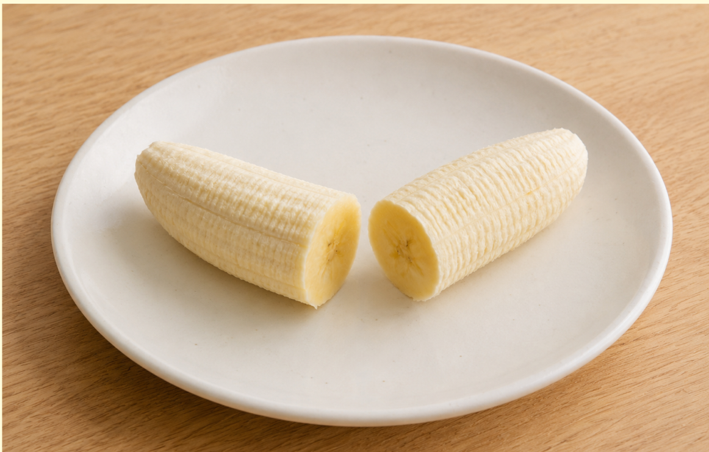
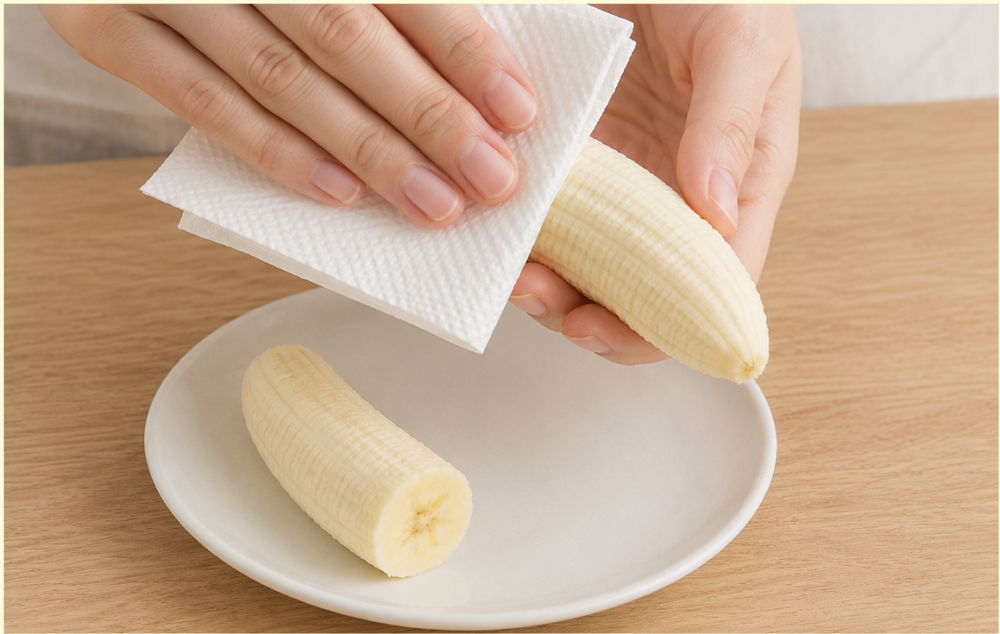
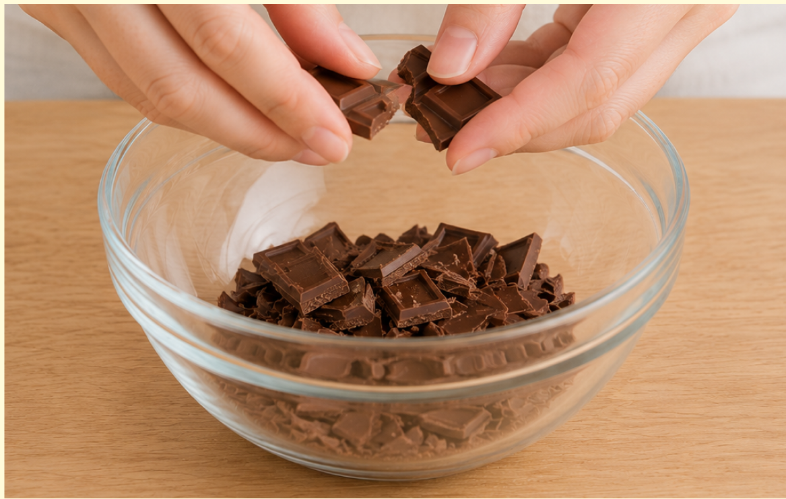
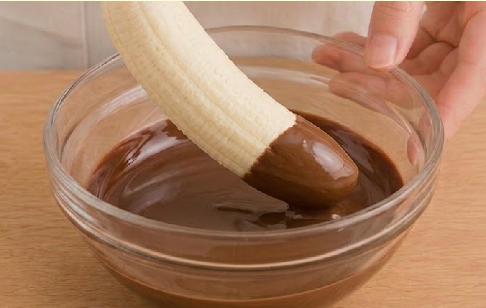
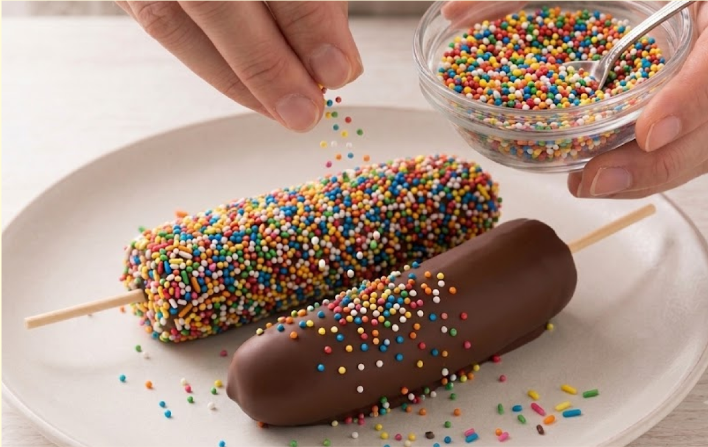
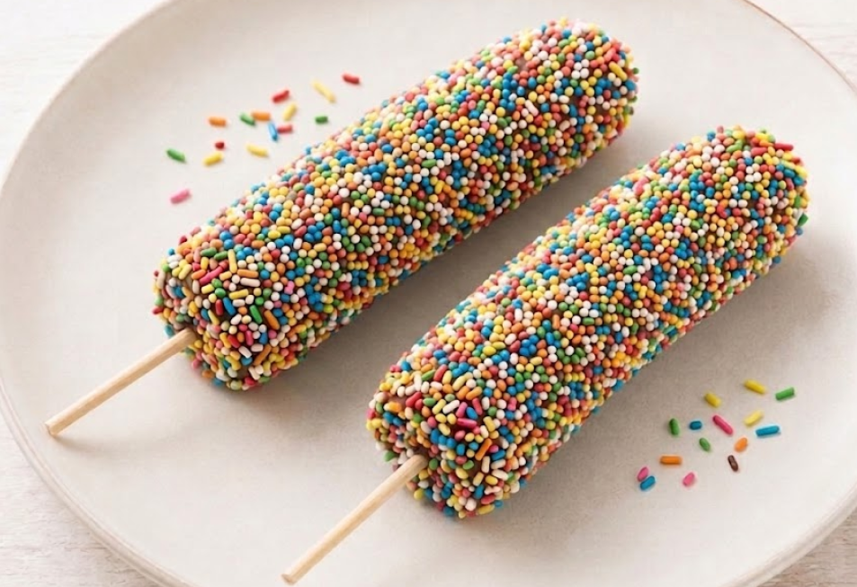

材料（一人分）
- ・バナナ1本
- ・板チョコ25～30g
- ・トッピングお好みで
- ・竹串2本
必要な道具
- ・耐熱容器
- ・スプーン
- ・包丁
- ・まな板
- ・お皿
注目ポイント
- 🚫 火を使わない
- 💡 アレンジしても◎
作り方
① バナナの皮をむき、半分に切ります。 切ったバナナに竹串を刺します。

② キッチンペーパーでバナナの表面を軽く拭きます。 こうすることでチョコが付きやすくなります。

③ 板チョコを細かく割って耐熱容器に入れ、 電子レンジで20～30秒ずつ加熱します。 その都度取り出して混ぜましょう。

④ 溶かしたチョコをスプーンでバナナにかけるか、 バナナをチョコにくぐらせます。

⑤ チョコが固まる前に好きなトッピングをかけます。 カラースプレーや砕いたナッツがおすすめです。

⑥ 冷蔵庫で20分ほど冷やします。 チョコが固まったら完成です。

調理のコツ
チョコはできるだけ細かく割りましょう。
加熱しすぎると焦げてしまうので、
混ぜながら温めましょう。
アレンジ
ホワイトチョコを使うと
見た目が可愛くなります。
砕いたクッキーをまぶすと
サクサクした食感になります。